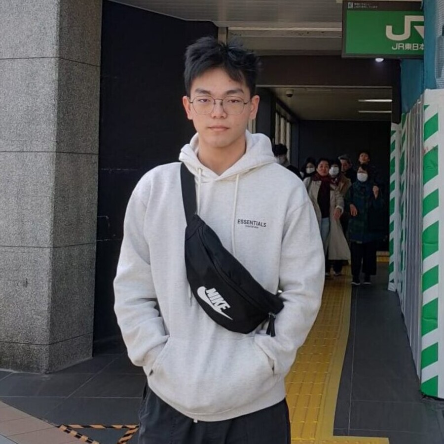

Hi, I’m
Zhao Shizhen
Computer Scientist
& Systems Builder

Based in Singapore · Open to ambitious technical collaborations
Hi, I’m
Computer Scientist
& Systems Builder

Based in Singapore · Open to ambitious technical collaborations